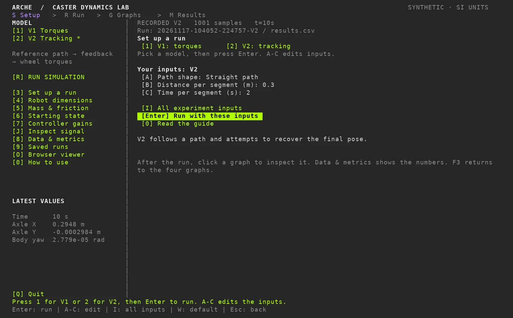
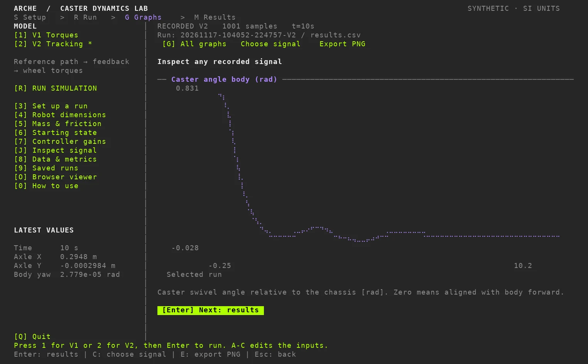

Equal-torque alignment
Start at 45° caster angle and apply the archived baseline preset. Read how the axle path bends as the caster aligns.
{{PYTHON_TORQUE_BASELINE}}Research overview / Development log
How the MATLAB caster model became a repeatable Python experiment for torque response, path tracking and QR docking.
MATLAB parity
The M2 model takes independent drive-wheel torques and computes the chassis, driven wheels and passive caster together. We ported its state and contact equations to Python and kept the MATLAB inputs and archived traces as the reference.
Normal loads and slip forces feed the planar equations. The RK4 solver advances the state at fixed steps. Separate logs record the energy entering at the axles and the losses in contact and bearings. The V1 regression suite later recorded 54 passing tests.
Closed-loop control
We corrected the wheel inertias, then added a trajectory reference, wheel-speed PI and terminal pose recovery. The controller compares pose with the reference in the robot frame and supplies the two axle torques to the mechanical model.


We compared baseline timing and quintic timing on four manoeuvres and two synthetic surfaces. In the reference-surface S turn, the published spatial RMSE fell from 11.62 mm to 1.05 mm. The reversal took 6.94 s with baseline timing and 7.50 s with smooth timing, so completion time matters alongside error.
JANUS qualification
JANUS added waypoint gates, camera-relative QR observations and a docking state machine. A fresh matching marker must hold in the inner band before advance. Loss, stale frames and wrong IDs can suppress the forward command.


Reproduce the method
Each example runs the displayed Python function against the project source. The first run loads Python and NumPy. The output includes plots and a downloadable CSV.
Start at 45° caster angle and apply the archived baseline preset. Read how the axle path bends as the caster aligns.
{{PYTHON_TORQUE_BASELINE}}Run the same geometric path with baseline and quintic timing. Compare cross-track error and the time each run reached the terminal tolerance.
{{PYTHON_COMPARE_S_TURN}}| Run | Samples | Recorded duration (s) | Path RMSE (mm) | Completion (s) | Peak axle torque (N·m) |
|---|
The dashed line is the path reference. The run colours match the result table.
Research tooling
The local TUI was built to vary geometry, contact parameters and controller gains during development. It uses the same physics adapter, saves each run with its effective parameters and keeps earlier runs available for inspection.

